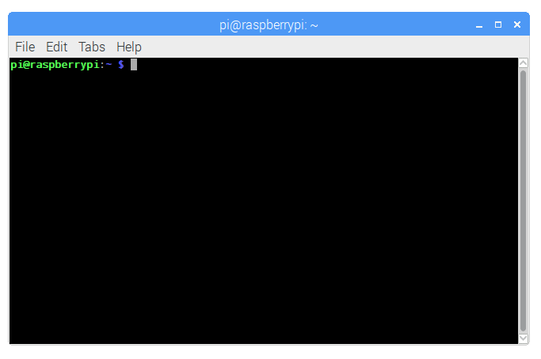
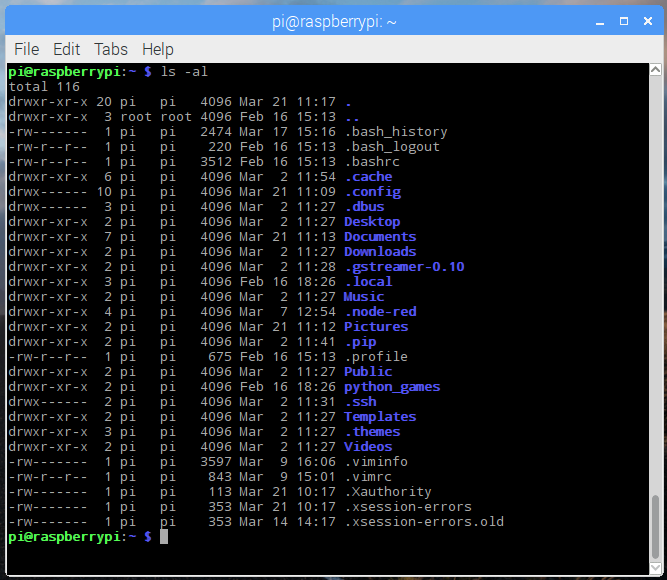

Raspbian
Raspbian is the operating system installed on your Solar Pi. This page is here to tell you how to use it.
Terminal
Info
This was taken from official Raspberry Pi documentation.
The terminal (or 'command-line') on a computer allows a user a great deal of control over their system (or in this case, Pi!). Users of Windows may already have come across Command Prompt or Powershell and Mac OS users may be familiar with Terminal. All of these tools allow a user to directly manipulate their system through the use of commands. These commands can be chained together and/or combined together into complex scripts (see the linux usage page on scripting) that can potentially complete tasks more efficiently than much larger traditional software packages.
Opening a Terminal window
On the Raspberry Pi (running Raspbian), the default terminal application is LXTerminal. This is known as a 'terminal emulator', this means that it emulates the old style video terminals (from before graphical user interfaces were developed) in a graphical environment. The application can be found on the Raspberry Pi desktop and when started will look something like this:

You should be able to see the following prompt:
pi@raspberrypi ~ $
This shows your username and the hostname of the Pi. Here the username is pi and the hostname is raspberrypi.
Now, let's try running a command. Type pwd (present working directory) followed by the Enter key. This should display something like /home/pi.
Navigating and browsing your Pi
One of the key aspects of using a terminal is being able to navigate your file system. Firstly, run the following command: ls -la. You should see something similar to:

The ls command lists the contents of the directory that you are currently in (your present working directory). The -la component of the command is what's known as a 'flag'. Flags modify the command that's being run. In this case the l displays the contents of the directory in a list, showing data such as their sizes and when they were last edited, and the a displays all files, including those beginning with a ., known as 'dotfiles'. Dotfiles usually act as configuration files for software and as they are written in text, they can be modified by simply editing them.
In order to navigate to other directories the change directory command, cd, can be used. You can specify the directory that you want to go to by either the 'absolute' or the 'relative' path. So if you wanted to navigate to the python_games directory, you could either do cd /home/pi/python_games or just cd python_games (if you are currently in /home/pi). There are some special cases that may be useful: ~ acts as an alias for your home directory, so ~/python_games is the same as /home/pi/python_games; . and .. are aliases for the current directory and the parent directory respectively, e.g. if you were in /home/pi/python_games, cd .. would take you to /home/pi.
History and auto-complete
Rather than type every command, the terminal allows you to scroll through previous commands that you've run by pressing the up or down keys on your keyboard. If you are writing the name of a file or directory as part of a command then pressing tab will attempt to auto-complete the name of what you are typing. For example, if you have a file in a directory called aLongFileName then pressing tab after typing a will allow you to choose from all file and directory names beginning with a in the current directory, allowing you to choose aLongFileName.
Sudo
Some commands that make permanent changes to the state of your system require you to have root privileges to run. The command sudo temporarily gives your account (if you're not already logged in as root) the ability to run these commands, provided your user name is in a list of users ('sudoers'). When you append sudo to the start of a command and press enter you will be asked for your password, if that is entered correctly then the command you want to run will be run using root privileges. Be careful though, some commands that require sudo to run can irreparably damage your system so be careful!
Further information on sudo and the root user can be found on the linux root page.
Installing software through apt-get
Rather than using the Pi Store to download new software you can use the command apt-get, this is the 'package manager' that is included with any Debian based Linux distributions (including Raspbian). It allows you to install and manage new software packages on your Pi. In order to install a new package you would type sudo apt-get install <package-name> (where <package-name> is the package that you want to install). Running sudo apt-get update updates a list of software packages that are available on your system. If a new version of a package is available then sudo apt-get upgrade will update any old packages to the new version. Finally, sudo apt-get remove <package-name> removes or uninstalls a package from your system.
More information about this can be found in the linux usage section on apt.
Other useful commands
There are a few other commands that you may find useful, these are listed below:
cpmakes a copy of a file and places it at the specified location (essentially doing a 'copy-paste'), for example -cp file_a /home/other_user/would copy the filefile_afrom your home directory to that of the userother_user(assuming you have permission to copy it there). Note that if the target is a folder, the filename will remain the same, but if the target is a filename, it will give the file the new name.mvmoves a file and places it at the specified location (so wherecpperforms a 'copy-paste',mvperforms a 'cut-paste'). The usage is similar tocp, somv file_a /home/other_user/would move the filefile_afrom your home directory to that of the specified user.mvis also used to rename a file, i.e. move it to a new location, e.g.mv hello.txt story.txt.rmremoves the specified file (or directory when used with-r). Warning: Files deleted in this way are generally not restorable.mkdir: This makes a new directory, e.g.mkdir new_dirwould create the directorynew_dirin the present working directory.catlists the contents of files, e.g.cat some_filewill display the contents ofsome_file.
Other commands you may find useful can be found in the commands page.
Finding out about a command
To find out more information about a particular command then you can run the man followed by the command you want to know more about (e.g. man ls). The man-page (or manual page) for that command will be displayed, including information about the flags for that program and what effect they have. Some man-pages will give example usage.